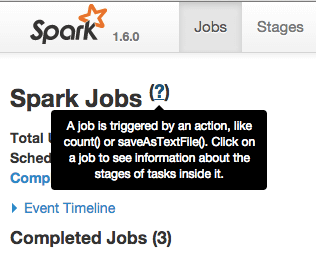
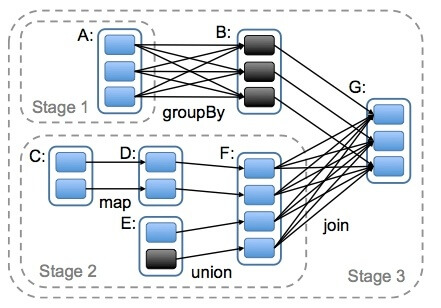
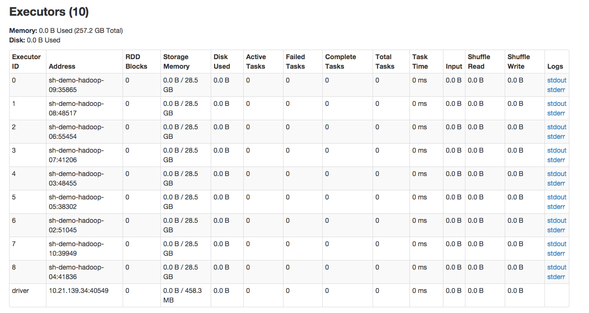

『 Spark 』2. spark 基本概念解析
2016-02-05
写在前面
本系列是综合了自己在学习spark过程中的理解记录 ＋ 对参考文章中的一些理解 ＋ 个人实践spark过程中的一些心得而来。写这样一个系列仅仅是为了梳理个人学习spark的笔记记录，所以一切以能够理解为主，没有必要的细节就不会记录了，而且文中有时候会出现英文原版文档，只要不影响理解，都不翻译了。若想深入了解，最好阅读参考文章和官方文档。
其次，本系列是基于目前最新的 spark 1.6.0 系列开始的，spark 目前的更新速度很快，记录一下版本号还是必要的。
最后，如果各位觉得内容有误，欢迎留言备注，所有留言 24 小时内必定回复，非常感谢。
Tips: 如果插图看起来不明显，可以：1. 放大网页；2. 新标签中打开图片，查看原图哦；3. 点击右边目录上方的 present mode 哦。
1. Application
用户在 spark 上构建的程序，包含了 driver 程序以及在集群上运行的程序代码，物理机器上涉及了 driver，master，worker 三个节点.
2. Driver Program
创建 sc ，定义 udf 函数，定义一个 spark 应用程序所需要的三大步骤的逻辑：加载数据集，处理数据，结果展示。
3. Cluster Manager
集群的资源管理器，在集群上获取资源的外部服务。 拿 Yarn 举例，客户端程序会向 Yarn 申请计算我这个任务需要多少的 memory，多少 CPU，etc。 然后 Cluster Manager 会通过调度告诉客户端可以使用，然后客户端就可以把程序送到每个 Worker Node 上面去执行了。
4. Worker Node
集群中任何一个可以运行spark应用代码的节点。Worker Node就是物理节点，可以在上面启动Executor进程。
5. Executor
在每个 Worker Node 上为某应用启动的一个进程，该进程负责运行任务，并且负责将数据存在内存或者磁盘上，每个任务都有各自独立的 Executor。 Executor 是一个执行 Task 的容器。它的主要职责是：
- 初始化程序要执行的上下文 SparkEnv，解决应用程序需要运行时的 jar 包的依赖，加载类。
- 同时还有一个 ExecutorBackend 向 cluster manager 汇报当前的任务状态，这一方面有点类似 hadoop的 tasktracker 和 task。
总结：Executor 是一个应用程序运行的监控和执行容器。
6. Jobs
包含很多 task 的并行计算，可以认为是 Spark RDD 里面的 action，每个 action 的触发会生成一个job。 用户提交的 Job 会提交给 DAGScheduler，Job 会被分解成 Stage，Stage 会被细化成 Task，Task 简单的说就是在一个数据 partition 上的单个数据处理流程。关于 job，stage，task，详细可以参考这篇文章：『 Spark 』6. 深入研究 spark 运行原理之 job, stage, task

A job is triggered by an action, like count() or saveAsTextFile(), click on a job to see info about the stages of tasks inside it.
7. Stage
一个 Job 会被拆分为多组 Task，每组任务被称为一个 Stage 就像 Map Stage， Reduce Stage。
Stage 的划分在 RDD 的论文中有详细的介绍，简单的说是以 shuffle 和 result 这两种类型来划分。 在 Spark 中有两类 task:
-
shuffleMapTask
输出是shuffle所需数据, stage的划分也以此为依据，shuffle之前的所有变换是一个stage，shuffle之后的操作是另一个stage。
-
resultTask，
输出是result，比如 rdd.parallize(1 to 10).foreach(println) 这个操作没有shuffle，直接就输出了，那么只有它的task是resultTask，stage也只有一个；如果是rdd.map(x => (x, 1)).reduceByKey(_ + _).foreach(println), 这个job因为有reduce，所以有一个shuffle过程，那么reduceByKey之前的是一个stage，执行shuffleMapTask，输出shuffle所需的数据，reduceByKey到最后是一个stage，直接就输出结果了。如果job中有多次shuffle，那么每个shuffle之前都是一个stage。
8. Task
被送到 executor 上的工作单元。
9. Partition
Partition 类似 hadoop 的 Split，计算是以 partition 为单位进行的，当然 partition 的划分依据有很多，这是可以自己定义的，像 HDFS 文件，划分的方式就和 MapReduce 一样，以文件的 block 来划分不同的 partition。总而言之，Spark 的 partition 在概念上与 hadoop 中的 split 是相似的，提供了一种划分数据的方式。
10. RDD
先看看原文 Resilient Distributed Datasets: A Fault-Tolerant Abstraction for In-Memory Cluster Computing 是怎么介绍 RDD 的。
a distributed memory abstraction that lets programmers perform in-memory computations on large clusters in a fault-tolerant manner.
RDDs are motivated by two types of applications that current computing frameworks handle inefficiently:
- iterative algorithms;
- interactive data mining tools;
In both cases, keeping data in memory can improve performance by an order of magnitude.
To achieve fault tolerance efficiently, RDDs provide a restricted form of shared memory, based on coarsegrained transformations rather than fine-grained updates to shared state. However, we show that RDDs are expressive enough to capture a wide class of computations, including recent specialized programming models for iterative jobs, such as Pregel, and new applications that these models do not capture. We have implemented RDDs in a system called Spark, which we evaluate through a variety of user applications and benchmarks.
每个RDD有5个主要的属性：
- 一组分片（partition），即数据集的基本组成单位
- 一个计算每个分片的函数
- 对parent RDD的依赖，这个依赖描述了RDD之间的lineage
- 对于key-value的RDD，一个Partitioner，这是可选择的
- 一个列表，存储存取每个partition的preferred位置。对于一个HDFS文件来说，存储每个partition所在的块的位置。这也是可选择的
把上面这5个主要的属性总结一下，可以得出RDD的大致概念。首先要知道，RDD大概是这样一种表示数据集的东西，它具有以上列出的一些属性。是spark项目组设计用来表示数据集的一种数据结构。而spark项目组为了让RDD能handle更多的问题，又规定RDD应该是只读的，分区记录的一种数据集合中。可以通过两种方式来创建RDD：一种是基于物理存储中的数据，比如说磁盘上的文件；另一种，也是大多数创建RDD的方式，即通过其他RDD来创建【以后叫做转换】而成。而正因为RDD满足了这么多特性，所以spark把RDD叫做Resilient Distributed Datasets，中文叫做弹性分布式数据集。很多文章都是先讲RDD的定义，概念，再来说RDD的特性。我觉得其实也可以倒过来，通过RDD的特性反过来理解RDD的定义和概念，通过这种由果溯因的方式来理解RDD也未尝不可。反正对我个人而言这种方式是挺好的。
RDD是Spark的核心，也是整个Spark的架构基础，可以总下出几个它的特性来：
- 它是不变的数据结构存储
- 它是支持跨集群的分布式数据结构
- 可以根据数据记录的key对结构进行分区
- 提供了粗粒度的操作，且这些操作都支持分区
- 它将数据存储在内存中，从而提供了低延迟性
关于 rdd 的更多详情，可以参考这篇文章：『 Spark 』4. spark 之 RDD
11. sc.parallelize
先看看 api 文档里是怎么说的：parallelize
- parallelize(c, numSlices=None)
Distribute a local Python collection to form an RDD. Using xrange is recommended if the input represents a range for performance.
简单的说，parallelize 就是把 driver 端定义的一个数据集，或者一个获取数据集的生成器，分发到 worker 上的 executor 中，以供后续分析。这种方式在测试代码逻辑时经常用到，但在构建真正的 spark 应用程序时很少会用到，一般都是从 hdfs 或者数据库去读取数据。
12. code distribute
提交 spark 应用时，spark 会把应用代码分发到所有的 worker 上面，应用依赖的包需要在所有的worker上都存在，有两种解决 worker 上相关包依赖的问题：
- 选用一些工具统一部署 spark cluster；
- 在提交 spark 应用的时候，指定应用依赖的相关包，把 应用代码，应用依赖包 一起分发到 worker；
13. cache priority
cache 是否支持 priority，目前不支持，而且 spark 里面对 rdd 的 cache 和我们常见的缓存系统是不一样的。细节可以找我讨论。
14. cores
The number of cores to use on each executor. For YARN and standalone mode only. In standalone mode, setting this parameter allows an application to run multiple executors on the same worker, provided that there are enough cores on that worker. Otherwise, only one executor per application will run on each worker.
每一个 core，相当于一个 worker 上的进程，这些进程会同时执行分配到这个 worker 上的任务。简单的说，就是 spark manager 把一个 job 切分几个 task 分发到 worker 上同步执行，而每个 worker 把分配给自己的 task 再切分成几个 subtask，分配给当前 worker 上的不同进程。
15. Memory
分配给 spark 应用的内存是仅仅给 cache 数据用吗？
不是，分配给 spark 应用的内存有三个方面的应用：
- spark 本身
- spark 应用
- spark 应用过程中 runtime 使用，比如 UDF 函数
- spark 应用中的 cache
16. RDD narrow/wide dependences
RDD 之间的依赖类别［ 或者，创建一个 RDD 的不同方法 ］

17. 本地内存与集群内存
所谓本地内存，是指在 driver 端的程序所需要的内存，由 driver 机器提供，一般用来生成测试数据，接受运算结果等； 所谓集群内存，是指提交到集群的作业能够向集群申请的最多内存使用量，一般用来存储关键数据；

18. 限制用户使用的内存
可以在启动 spark 应用的时候申请；完全可控。
19. 当用户申请总资源超过当前集群总资源
FIFO 资源分配方式。
20. SparkContext [经常简称为 sc]
spark app 的起点和入口，一般用来加载数据集，生成第一个 rdd。
21. 对一个 rdd 多次 cache 会有什么影响吗？
不会，只会cache一次。stackoverflow
22. 什么是 shuffle
shuffle 是两个 stage 之间的数据传输过程。
23. Next
下一篇，通过几个简单的例子来介绍 spark 的基本编程模式。
24. 打开微信，扫一扫，点一点，棒棒的，^_^

参考文章
- spark-rdd-paper : Resilient Distributed Datasets: A Fault-Tolerant Abstraction for In-Memory Cluster Computing
- spark python API
本系列文章链接
- 『 Spark 』1. spark 简介
- 『 Spark 』2. spark 基本概念解析
- 『 Spark 』3. spark 编程模式
- 『 Spark 』4. spark 之 RDD
- 『 Spark 』5. 这些年，你不能错过的 spark 学习资源
- 『 Spark 』6. 深入研究 spark 运行原理之 job, stage, task
- 『 Spark 』7. 使用 Spark DataFrame 进行大数据分析
- 『 Spark 』8. 实战案例 ｜ Spark 在金融领域的应用 ｜ 日内走势预测
- 『 Spark 』9. 搭建 IPython + Notebook + Spark 开发环境
- 『 Spark 』10. spark 应用程序性能优化｜12 个优化方法
- 『 Spark 』11. spark 机器学习
- 『 Spark 』12. Spark 2.0 特性介绍
- 『 Spark 』13. Spark 2.0 Release Notes 中文版
- 『 Spark 』14. 一次 Spark SQL 性能优化之旅